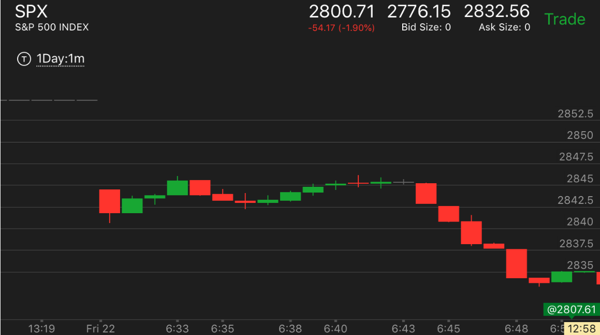
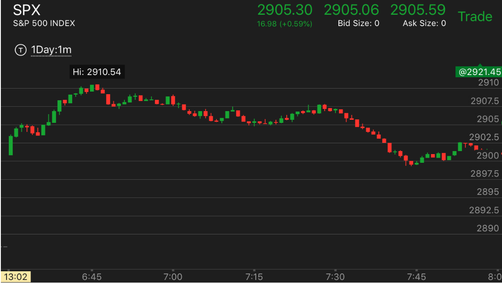
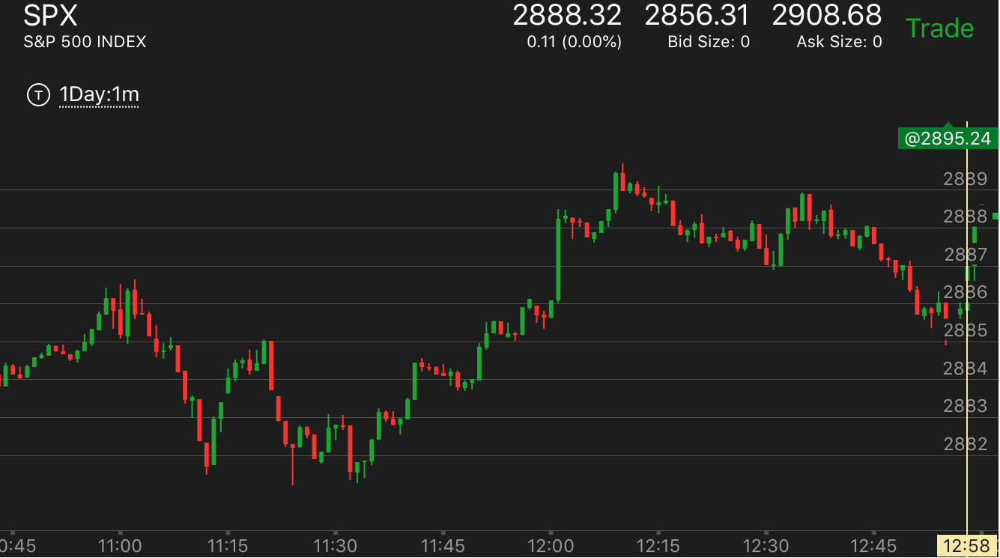
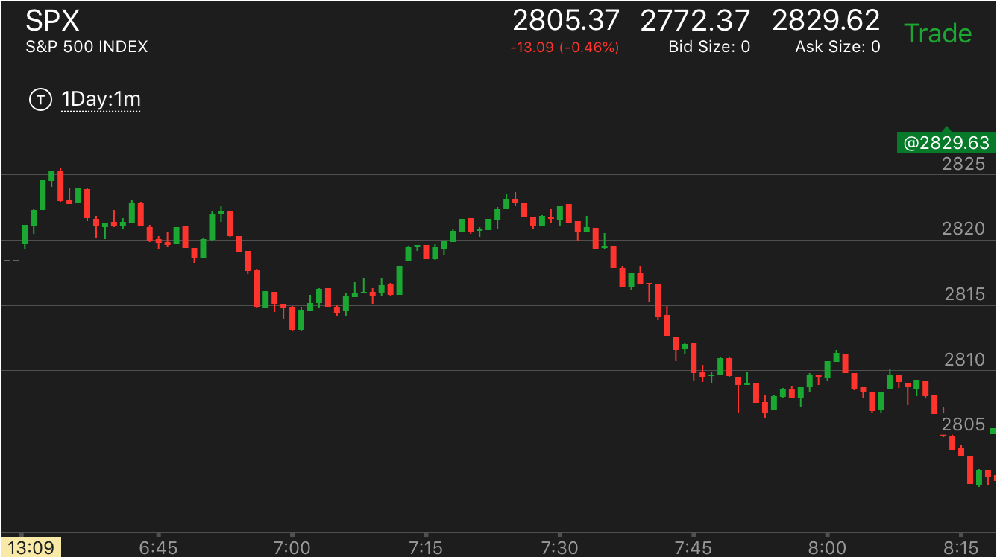

加速bar原理：这个走势关键在于是否出现了加速的bar。这个非常重要
- 如果出现了加速bar，那么它的反向走势一定要加速才会结束，而且符合相对快慢的原则。
- 如果没有加速bar，但是出现了类似深井的走势，它会反向走，但是一旦稍微超过下跌或者上涨的起始点，就会结束，然后再次回头。
这个不需要加速bar就可以反转。
- 也要注意区分底部和顶部加速的走势。这两个走势都没有加速bar。但是也是加速走势。
- 一个两段走势结束也不一定会出现加速bar，所以不能看到没有加速bar就以为走势没有结束
两个深井走势的区别
没有加速bar的两段走势结束
回调的时候出现了加速bar
回调的时候出现了加速bar
TOP

图示：11:20的两段下跌走势中，出现了加速bar，这个是个明确的信号。就是说，一定会涨了。
没有加速bar的两段走势结束
TOP

图示：一开盘从第二个bar出现第一段，然后回调，出现第二段。
第二段走平几分钟。甚至没有创新高。但是也是两段走势的结束。

图示：开盘冲高，然后回调，再次冲高。这次幅度比较大，然后在高点
走平几分钟。这个就是第二段了。它要结束，起码会回到两段走势的开始，或者超过。
两个深井走势的区别
TOP

图示：11:30出现了一个快速下跌。虽然它没有跌很多。但是这个本身就是一个加速了。这个走势要反转需要符合两个条件，
一定要超过2887这个下跌的起始点。另外需要加速。12：00虽然出现了加速，但是它的加速不是那种慢慢上涨后的加速，而是一个台阶的上涨加速。这样的加速不是
正常的加速。所以不是顶部。

图示：6:50出现了相对论走势。但是7：00它继续缓慢走低后，拉回。它的最低点没有加速到达。说明没有到了底部。
但是因为它本身符合相对论。它必须涨。而它上涨缓慢。说明必须超过6：50开始的下跌点。这样两者结合。
就出现了在7：20开始的刚刚超过顶点，就开始下跌的现象。而且它一定会跌破7：00的底部。